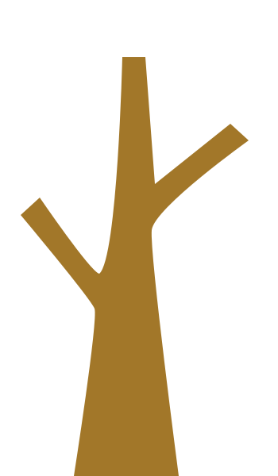

Estructura del estado en Colombia
El poder público en Colombia está dividido en tres ramas, con funciones diferentes e independientes
para «garantizar la efectividad de los principios, derechos y deberes consagrados en la Constitución»
como está estipulado en el artículo 2 de la Constitución del 91.
Haz clic en alguna de las ramas para conocer más...

Conoce más en: Banco de la república